Well-constructed figures can make a huge difference in how your work is received. First, they look nice! But more importantly, a well-constructed figure, just like a well-constructed sentence, can more accurately and more succinctly convey key information to the reader. We’ve already learned the basics of plotting in the first data visualization lesson, but we didn’t spend much time making our figures look as nice as we could have. The sky is limit with graphics in R, but with just a little bit of extra effort, you can make very nice figures.
That’s what we’re doing in this lesson.
Libraries, functions, and paths
In addition to tidyverse, we’ll add a new library, patchwork, that we’ll use toward the end of the lesson. If you haven’t already downloaded it, be sure to install it first using install.packages("patchwork").
── Attaching core tidyverse packages ──────────────────────── tidyverse 2.0.0 ──
✔ dplyr 1.1.4 ✔ readr 2.1.5
✔ forcats 1.0.0 ✔ stringr 1.5.1
✔ ggplot2 3.4.4 ✔ tibble 3.2.1
✔ lubridate 1.9.3 ✔ tidyr 1.3.0
✔ purrr 1.0.2
── Conflicts ────────────────────────────────────────── tidyverse_conflicts() ──
✖ dplyr::filter() masks stats::filter()
✖ dplyr::lag() masks stats::lag()
ℹ Use the conflicted package (<http://conflicted.r-lib.org/>) to force all conflicts to become errors
library(patchwork)
We’ll need to convert and then replace some missing values in the lesson, so we’ll include our user-written function, fix_missing(), that we first used in the programming lesson.
## ---------------------------## functions## ---------------------------## utility function to convert values to NAfix_missing <-function(x, miss_val) { x <-ifelse(x %in% miss_val, NA, x)return(x)}
Finally, we’ll load the data file we’ll be using, hsls_small.csv. Since we already know about the structure of hsls_small.csv, we’ll use the read_csv() argument show_col_types = FALSE to prevent all the extra console output when we read in the data file.
Rather than make a variety of plots, we’ll focus on making and incrementally improving a single figure (with some slight variations along the way). In general, we’ll be looking at math test scores via the x1txtmscor data column.
Let’s start with the most basic histogram we can make. But first, we need to fix our variable of interest. As you may recall from an earlier lesson, x1txmtscor is a normed variable with a mean of 50 and standard deviation of 10. That means the negative values need to be converted to NA values and, for our plotting purposes, dropped.
## -----------------------------------------------------------------------------## initial plain plot## -----------------------------------------------------------------------------## fix missing values for text score and then drop missingdf <- df |>mutate(math_test =fix_missing(x1txmtscor, -8)) |>drop_na(math_test)
Now we can make our histogram with no extra settings:
`stat_bin()` using `bins = 30`. Pick better value with `binwidth`.
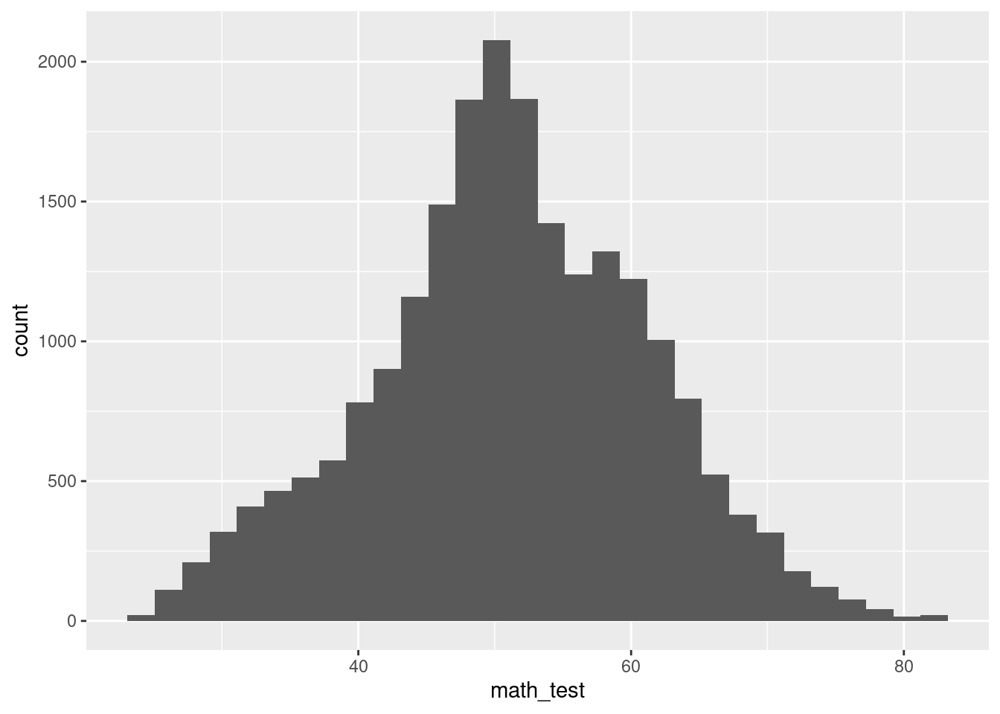
So there it is. Let’s make it better.
Titles and captions
The easiest things to improve on a figure are the title, subtitle, axis labels, and caption. As with a lot of ggplot2 commands, there are a few different ways to set these labels, but the most straightforward way is to use the labs() function as part of the ggplot() chain. Notice that we’ve added it to the end. (Also notice that we’ve set the bins = 30 argument within geom_histogram(), which is the default and will prevent a message from popping up each time.)
## -----------------------------------------------------------------------------## titles and captions## -----------------------------------------------------------------------------## create histogram using ggplot, showing placeholder titles/labels/captionsp <-ggplot(data = df,mapping =aes(x = math_test)) +geom_histogram(bins =30) +labs(title ="Title",subtitle ="Subtitle",caption ="Caption",x ="X axis label",y ="Y axis label")## show p
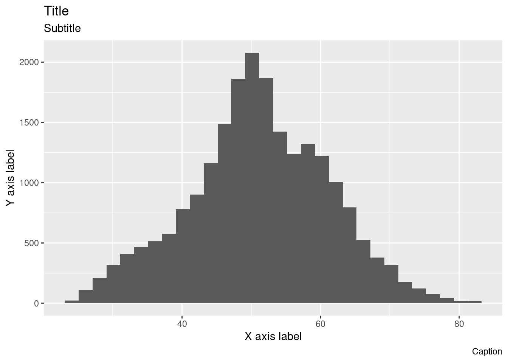
Rather than accurately labeling the figure, I’ve repeated the arguments in strings so that it’s clearer where every piece goes. The title is of course on top, with the subtitle in a smaller font just below. The x and y axis labels go with their respective axes and the caption is right-aligned below the figure. You don’t have to use all of these options for every figure. If you don’t want to use one, you have a couple of options:
If the argument would otherwise be blank (title, subtitle, and caption), you can just leave the argument out of labs()
If the argument will be filled, as is the case on the axes (ggplot will use the variable name by default), you can use NULL
To make our figure nicer, we’ll add a title, axis labels, and caption describing the data source. We don’t really need a subtitle and since there’s no default value, we’ll just leave it out.
## ---------------------------## titles and captions: ver 2## ---------------------------## create histogram using ggplotp <-ggplot(data = df,mapping =aes(x = math_test)) +geom_histogram(bins =30) +labs(title ="Math test scores",caption ="Data: High School Longitudinal Study, 2009",x ="Math score",y ="Count")## show p
That looks better. Now we’ll move to improving the axis scales.
Axis formatting
In general, the default tick mark spacing and accompanying labels are pretty good. But sometimes we want to change them, sometimes to have fewer ticks and sometimes to have more. For this figure, we could use more ticks on the x axis to make differences in math test score clearer. While we’re at, we’ll increase the number of tick marks on the y axis too.
To change these values, we need to use scale_< aesthetic >_< distribution > function. These may seem strange at first, but they follow a logic. Specifically:
< aesthetic >: x, y, fill, colour, etc (what is being changed?)
< distribution >: is the underlying variable continuous, discrete, or do you want to make a manual change?
To change our x and y tick marks we use:
scale_x_continuous()
scale_y_continuous()
We use x and y because those are the aesthetics being adjusted and we use continuous in both cases because math_test on the x axis and the histogram counts on the y axis are both continuous variables.
There are a number of options within the scale_*() family of functions — and they can change depending on which scale_*() function you use — but we’ll focus on using two:
breaks: where the major lines are going (they get numbers on the axis)
minor_breaks: where the minor lines are going (they don’t get numbers on the axis)
Both breaks and minor_breaks take a vector of numbers. We can put each number in manually using c() (e.g., c(0, 10, 20, 30, 40)), but a better way is to use R’s seq() function: seq(start, end, by). Notice that within each scale_*() function, we use the same start and stop arguments for each seq(). We only change the by argument. This will give us axis numbers at spaced intervals with thinner, unnumbered lines between.
## -----------------------------------------------------------------------------## axis formatting## -----------------------------------------------------------------------------## create histogram using ggplotp <-ggplot(data = df,mapping =aes(x = math_test)) +geom_histogram(bins =30) +scale_x_continuous(breaks =seq(from =0, to =100, by =5),minor_breaks =seq(from =0, to =100, by =1)) +scale_y_continuous(breaks =seq(from =0, to =2500, by =100),minor_breaks =seq(from =0, to =2500, by =50)) +labs(title ="Math test scores",caption ="Data: High School Longitudinal Study, 2009",x ="Math score",y ="Count")## show p
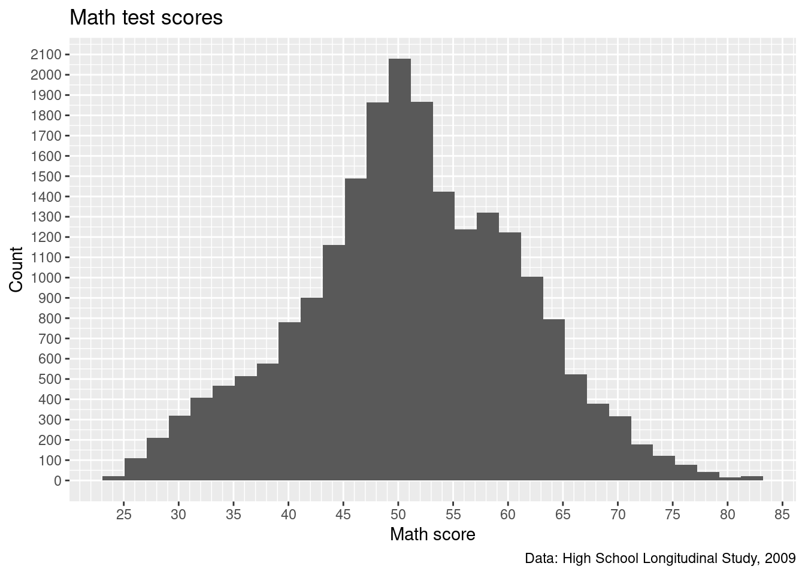
We certainly have more lines now. Maybe too many on the y axis, which is a sort of low-information axis (do we need really that much detail for histogram counts?). Let’s keep what we have for the x axis and increase the by values of the y axis.
## ---------------------------## axis formatting: ver 2## ---------------------------## create histogram using ggplotp <-ggplot(data = df,mapping =aes(x = math_test)) +geom_histogram(bins =30) +scale_x_continuous(breaks =seq(from =0, to =100, by =5),minor_breaks =seq(from =0, to =100, by =1)) +scale_y_continuous(breaks =seq(from =0, to =2500, by =500),minor_breaks =seq(from =0, to =2500, by =100)) +labs(title ="Math test scores",caption ="Data: High School Longitudinal Study, 2009",x ="Math score",y ="Count")## show p
That seems like a better balance. We’ll stick with that and move on to legend labels.
Legend labels
Let’s make our histogram a little more complex by separating math scores by parental education. Specifically, we’ll use a binary variable that represents, did either parent attend college? First, we need to create a new variable, pared_coll, from the ordinal variable, x1paredu. You can check the discussion of why we create the variable this way from the first plotting lesson.
## -----------------------------------------------------------------------------## legend labels## -----------------------------------------------------------------------------## add indicator that == 1 if either parent has any collegedf <- df |>mutate(pared_coll =ifelse(x1paredu >=3, 1, 0))
Now we’ll make our same histogram, but add the fill aesthetic. As we’ve done in the past, we’ll wrap our new binary variable in as_factor() so ggplot understands that 0/1 are discrete values. We’ll also modify geom_histogram() to use smaller bins, a new "identity" position, and make the fill colors semi-transparent with alpha.
## create histogram using ggplotp <-ggplot(data = df,mapping =aes(x = math_test, fill =as_factor(pared_coll))) +geom_histogram(bins =50, alpha =0.5, position ="identity") +scale_x_continuous(breaks =seq(from =0, to =100, by =5),minor_breaks =seq(from =0, to =100, by =1)) +scale_y_continuous(breaks =seq(from =0, to =2500, by =500),minor_breaks =seq(from =0, to =2500, by =100)) +labs(title ="Math test scores by parental education",caption ="Data: High School Longitudinal Study, 2009",x ="Math score",y ="Count")## show p
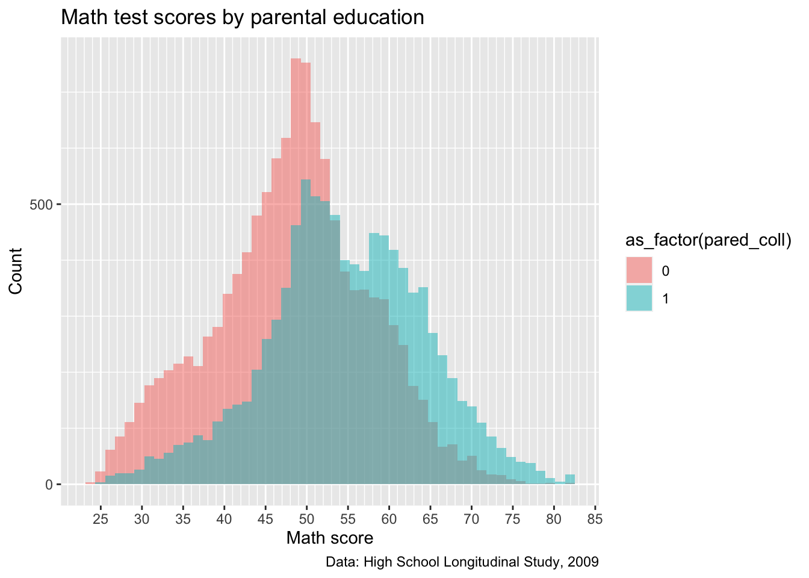
Except for our labels and tick mark adjustments, this looks similar to what we’ve made before. The problem with this figure is two-fold:
The legend title is not very nice — it’s just the variable name wrapped in the as_factor() function
The legend itself isn’t very informative: what do 0 and 1 mean?
To fix this, we’ll switch from using as_factor() to factor(), which has more options. We’ll add the following function to aes() in the initial ggplot() function:
fill =factor(pared_coll,levels =c(0,1),labels =c("No college","College"))
With factor(), we first say which variable should be converted to a factor, pared_coll. Next, we manually set the levels of the factor. That’s easy here because we only have two levels, 0 and 1, which we can set using levels = c(0,1). Finally, we can add labels to the levels. The main thing to make sure of is that the order of our labels match the order of the levels. Since
0 := no parental college
1 := at least one parent went to college
we use labels = c("No college","College") which match the c(0,1) order in levels. Other than that, everything else is the same.
NOTE: we could have made pared_coll a factor when we initially created it. In general, that is easier if we want the variable to always be a factor and we’re making a large number of figures. But for our purposes at the moment, we just convert it on the fly inside ggplot.
## ---------------------------## legend labels: ver 2## ---------------------------## create histogram using ggplotp <-ggplot(data = df,mapping =aes(x = math_test,fill =factor(pared_coll,levels =c(0,1),labels =c("No college","College")))) +geom_histogram(bins =50, alpha =0.5, position ="identity") +scale_x_continuous(breaks =seq(from =0, to =100, by =5),minor_breaks =seq(from =0, to =100, by =1)) +scale_y_continuous(breaks =seq(from =0, to =2500, by =500),minor_breaks =seq(from =0, to =2500, by =100)) +labs(title ="Math test scores by parental education",caption ="Data: High School Longitudinal Study, 2009",x ="Math score",y ="Count")## show p
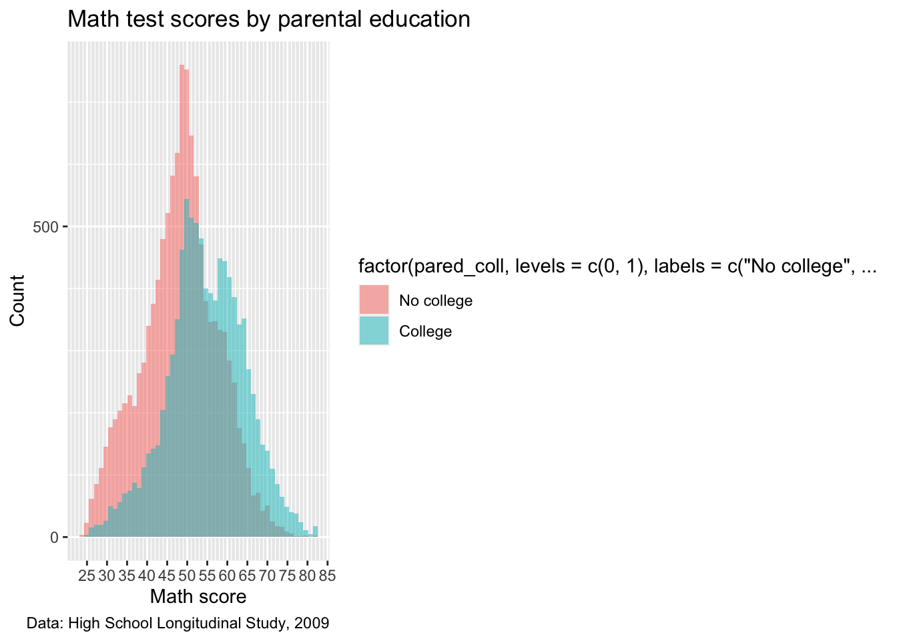
Closer, but not quite! The 0/1 have been given proper labels, but the legend title is even worse! Not only is it not nice to look at it, it’s now so long that it squishes our plot. What we need to add is a scale_*() function to fix it. Since we’re working with fill and a discrete variable (remember: the factor only takes on countable values, two in this case), then we’ll use scale_fill_discrete(). We don’t really need to do anything other than give the legend that goes with the fill aesthetic a name, so that’s the argument we use: name.
Let’s add that to the chain just below our other scale_*() functions before labs().
## ---------------------------## legend labels: ver 3## ---------------------------## create histogram using ggplotp <-ggplot(data = df,mapping =aes(x = math_test,fill =factor(pared_coll,levels =c(0,1),labels =c("No college","College")))) +geom_histogram(bins =50, alpha =0.5, position ="identity") +scale_x_continuous(breaks =seq(from =0, to =100, by =5),minor_breaks =seq(from =0, to =100, by =1)) +scale_y_continuous(breaks =seq(from =0, to =1500, by =100),minor_breaks =seq(from =0, to =1500, by =25)) +scale_fill_discrete(name ="Parental education") +labs(title ="Math test scores by parental education",caption ="Data: High School Longitudinal Study, 2009",x ="Math score",y ="Count")## show p
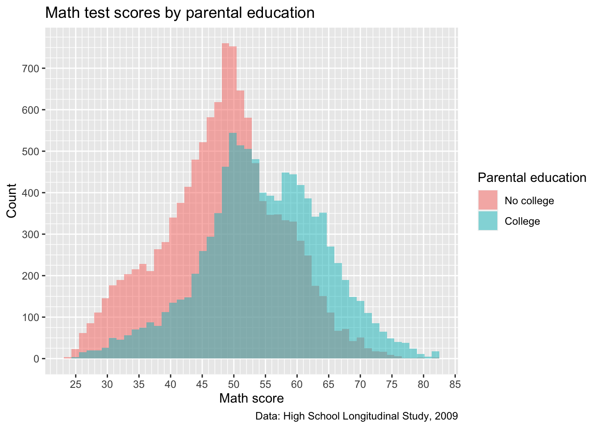
Much better!
Facet labels
Now that we’ve done the hard work of setting a factor, we can use the same bit of code to more properly label facets. Instead of splitting the test score histogram by color within the same plot area like we do above, let’s say we use facet_wrap() instead. This will give us discrete plot areas for each value of pared_coll.
To convert to a facetted figure, we’ll just move the factor(...) information from fill to facet_wrap(). Since we don’t have color changes based on fill, we can remove alpha and position from geom_histogram().
## -----------------------------------------------------------------------------## facet labels## -----------------------------------------------------------------------------## create histogram using ggplotp <-ggplot(data = df,mapping =aes(x = math_test)) +facet_wrap(~factor(pared_coll,levels =c(0,1),labels =c("No college","College"))) +geom_histogram(bins =50) +scale_x_continuous(breaks =seq(from =0, to =100, by =5),minor_breaks =seq(from =0, to =100, by =1)) +scale_y_continuous(breaks =seq(from =0, to =1500, by =100),minor_breaks =seq(from =0, to =1500, by =25)) +labs(title ="Math test scores by parental education",caption ="Data: High School Longitudinal Study, 2009",x ="Math score",y ="Count")## show p
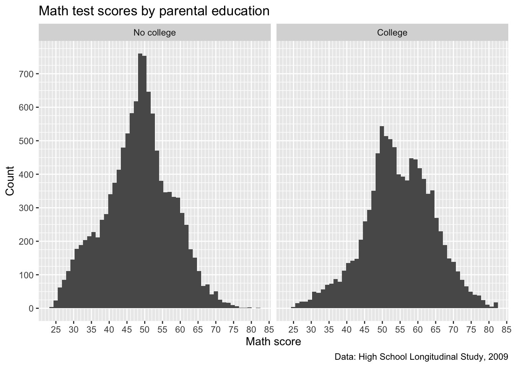
Notice how each facet has a proper label. Easy enough! Note that there is another way to fix facet labels using the labeller() function, but setting the labels using factor() will work for most situations.
Themes
Now that we’ve largely set our various labels, we can adjust the overall look of the figure. If you did the mapping lesson you may have noticed the we called theme_void() on all of our maps, which completely removed all the plotting structure: titles, labels, ticks, axes, etc. That’s the extreme end of adjusting the theme!
Let’s start with simply removing the gray area of the figure. To do this, we use the theme() function at the end of our ggplot chain. Specifically, we’ll call the argument panel.background and remove it using element_blank().
## -----------------------------------------------------------------------------## themes## -----------------------------------------------------------------------------## create histogram using ggplotp <-ggplot(data = df,mapping =aes(x = math_test)) +facet_wrap(~factor(pared_coll,levels =c(0,1),labels =c("No college","College"))) +geom_histogram(bins =50) +scale_x_continuous(breaks =seq(from =0, to =100, by =5),minor_breaks =seq(from =0, to =100, by =1)) +scale_y_continuous(breaks =seq(from =0, to =1500, by =100),minor_breaks =seq(from =0, to =1500, by =25)) +labs(title ="Math test scores by parental education",caption ="Data: High School Longitudinal Study, 2009",x ="Math score",y ="Count") +theme(panel.background =element_blank())## show p
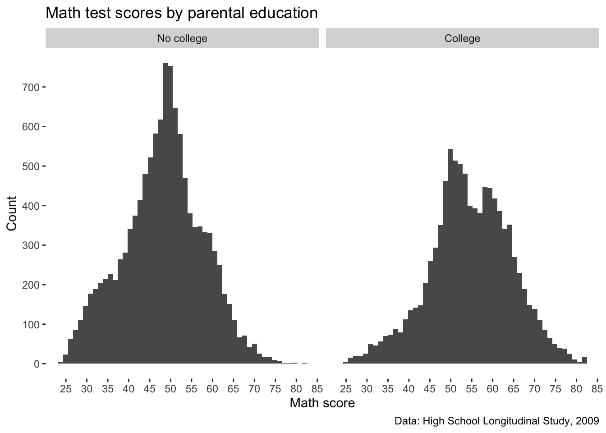
So we removed the panel, but since our grid lines were white to offset the gray, we don’t have grid lines any more. These would be helpful! We can add them back in, but make them gray using panel.grid.major and panel.grid.minor (notice the similar construction of the names) and setting them with element_line(colour = "gray").
## ---------------------------## themes: ver 2## ---------------------------## create histogram using ggplotp <-ggplot(data = df,mapping =aes(x = math_test)) +facet_wrap(~factor(pared_coll,levels =c(0,1),labels =c("No college","College"))) +geom_histogram(bins =50) +scale_x_continuous(breaks =seq(from =0, to =100, by =5),minor_breaks =seq(from =0, to =100, by =1)) +scale_y_continuous(breaks =seq(from =0, to =1500, by =100),minor_breaks =seq(from =0, to =1500, by =25)) +labs(title ="Math test scores by parental education",caption ="Data: High School Longitudinal Study, 2009",x ="Math score",y ="Count") +theme(panel.background =element_blank(),panel.grid.major =element_line(colour ="gray"),panel.grid.minor =element_line(colour ="gray"))## show p
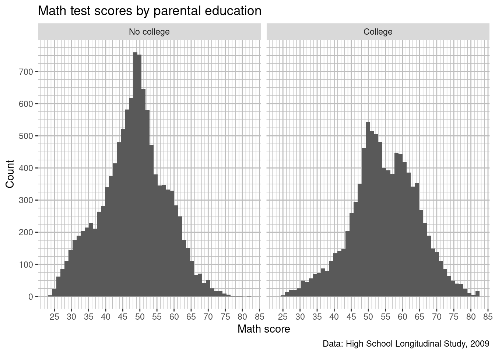
That returned our lines, but let’s say that we don’t really care about the horizontal lines. Rather than have the reader focus on counts, we really just want them to focus on the distribution around the math score. If we want to adjust the panel grids one axis at a time, we use the same stub and add *.x and *.y as necessary. Notice how for the x panel grids we use the old code, but for the y panel grids, return to using element_blank().
## ---------------------------## themes: ver 3## ---------------------------## create histogram using ggplotp <-ggplot(data = df,mapping =aes(x = math_test)) +facet_wrap(~factor(pared_coll,levels =c(0,1),labels =c("No college","College"))) +geom_histogram(bins =50) +scale_x_continuous(breaks =seq(from =0, to =100, by =5),minor_breaks =seq(from =0, to =100, by =1)) +scale_y_continuous(breaks =seq(from =0, to =1500, by =100),minor_breaks =seq(from =0, to =1500, by =25)) +labs(title ="Math test scores by parental education",caption ="Data: High School Longitudinal Study, 2009",x ="Math score",y ="Count") +theme(panel.background =element_blank(),panel.grid.major.x =element_line(colour ="grey"),panel.grid.minor.x =element_line(colour ="grey"),panel.grid.major.y =element_blank(),panel.grid.minor.y =element_blank())## show p
Great! Now we only have vertical grid lines. Of course, we don’t really need the y axis ticks and labels now. We can ditch them by setting axis.title.y, axis.text.y, and axis.ticks.y to element_blank(). Notice that since we call this after labs(), our label for y is ignored.
## ---------------------------## themes: ver 4## ---------------------------## create histogram using ggplotp <-ggplot(data = df,mapping =aes(x = math_test)) +facet_wrap(~factor(pared_coll,levels =c(0,1),labels =c("No college","College"))) +geom_histogram(bins =50) +scale_x_continuous(breaks =seq(from =0, to =100, by =5),minor_breaks =seq(from =0, to =100, by =1)) +scale_y_continuous(breaks =seq(from =0, to =1500, by =100),minor_breaks =seq(from =0, to =1500, by =25)) +labs(title ="Math test scores by parental education",caption ="Data: High School Longitudinal Study, 2009",x ="Math score",y ="Count") +theme(panel.background =element_blank(),panel.grid.major.x =element_line(colour ="grey"),panel.grid.minor.x =element_line(colour ="grey"),panel.grid.major.y =element_blank(),panel.grid.minor.y =element_blank(),axis.title.y =element_blank(),axis.text.y =element_blank(),axis.ticks.y =element_blank())## show p
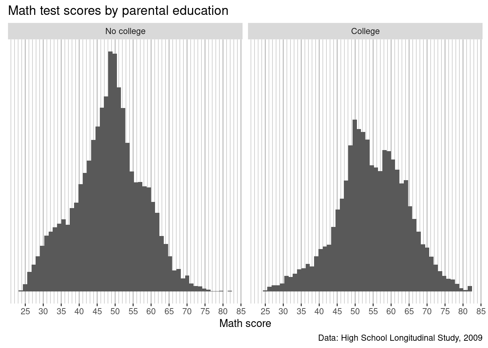
Okay! We have what we set out to get.
Remember, all the elements of a ggplot figure can be adjusted. That said, there are some shortcut theme_*() functions we can use that will save some typing. For example, theme_bw() will give something very similar to what we built before removing the horizontal lines.
## ---------------------------## themes: ver 5## ---------------------------## create histogram using ggplotp <-ggplot(data = df,mapping =aes(x = math_test)) +facet_wrap(~factor(pared_coll,levels =c(0,1),labels =c("No college","College"))) +geom_histogram(bins =50) +scale_x_continuous(breaks =seq(from =0, to =100, by =5),minor_breaks =seq(from =0, to =100, by =1)) +scale_y_continuous(breaks =seq(from =0, to =1500, by =100),minor_breaks =seq(from =0, to =1500, by =25)) +labs(title ="Math test scores by parental education",caption ="Data: High School Longitudinal Study, 2009",x ="Math score",y ="Count") +theme_bw()## show p
In this final section, we’ll practice putting multiple figures together. All the plots we’ve made so far have used the same underlying data. Even when we’ve used facet_wrap() to make multiple plot areas, they were related in some way. But what if we want to neatly paste different unrelated plots into a single figure, laid out exactly the way we want?
We’ll start by making a new figure. Rather than splitting math scores by parental education, we’ll split by whether the student is below or above 185% of the federal poverty level. As before, we’ll remove missing values from the variable, x1poverty185, and create a new variable, pov185, that takes a binary 0 (below) / 1 (above) set of values.
## -----------------------------------------------------------------------------## multiple plots with patchwork## -----------------------------------------------------------------------------## remove missing valuesdf <- df |>mutate(pov185 =fix_missing(x1poverty185, c(-8,-9))) |>drop_na(pov185)## make histogramp2 <-ggplot(data = df,mapping =aes(x = math_test)) +facet_wrap(~factor(pov185,levels =c(0,1),labels =c("Below 185% poverty line","Above 185% poverty line"))) +geom_histogram(bins =50) +scale_x_continuous(breaks =seq(from =0, to =100, by =5),minor_breaks =seq(from =0, to =100, by =1)) +scale_y_continuous(breaks =seq(from =0, to =1500, by =100),minor_breaks =seq(from =0, to =1500, by =25)) +labs(title ="Math test scores by poverty level",caption ="Data: High School Longitudinal Study, 2009",x ="Math score",y ="Count") +theme_bw()## showp2
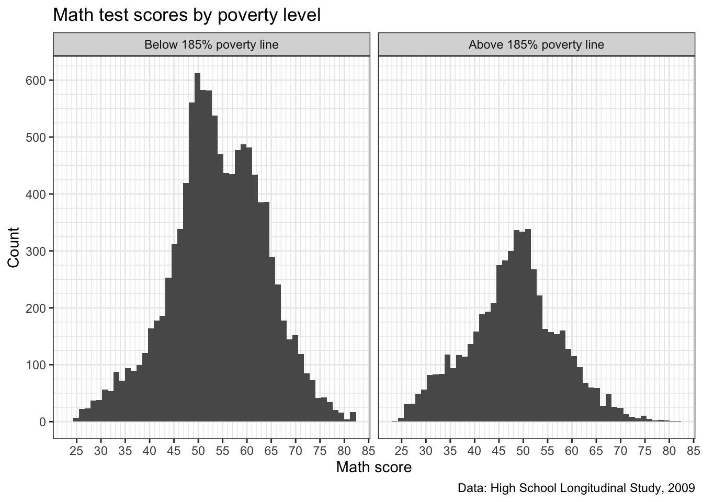
Now that we have our new figure, let’s paste it side by side (left-right) with our first figure. Once we’ve loaded the patchwork library (like we already did at the top of the script), we can use a + sign between out two ggplot objects: p + p2. We’ll store that in a new object, pp, and then call that.
## ---------------------------## patchwork: side by side## ---------------------------## use plus sign for side by sidepp <- p + p2## showpp
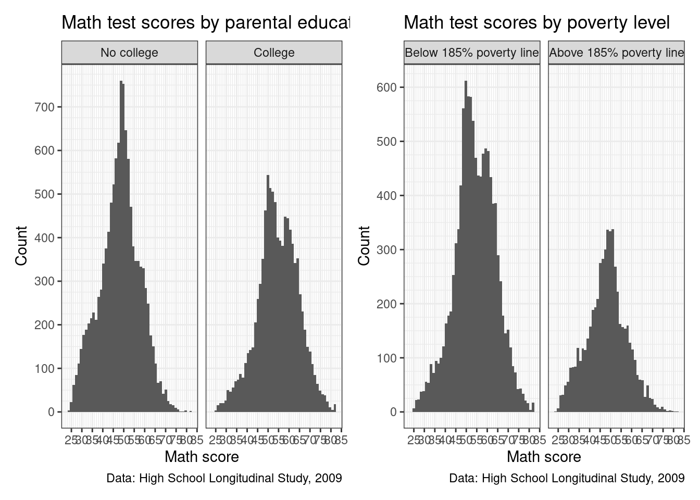
Definitely works, but it’s a little squished. Rather than side by side, let’s stack them this time. To stack two plots with patchwork, use a forward slash, /.
## ---------------------------## patchwork: stack## ---------------------------## use forward slash to stackpp <- p / p2## showpp
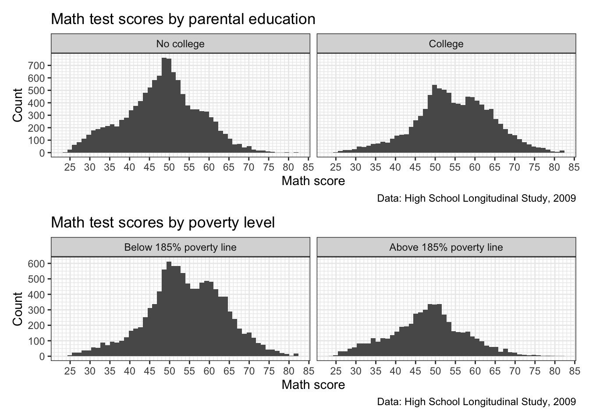
That looks better!
Patchwork is sufficiently flexible that you can arrange many figures. Let’s create yet another figure: test score by socioeconomic status. After cleaning up that variable, we make a new plot.
## ---------------------------## patchwork: 2 over 1## ---------------------------## drop missing SES valuesdf <- df |>mutate(ses =fix_missing(x1ses, -8)) |>drop_na(ses)## create third histogram of just SESp3 <-ggplot(data = df,mapping =aes(x = x1ses)) +geom_histogram(bins =50) +scale_x_continuous(breaks =seq(from =-5, to =5, by =1),minor_breaks =seq(from =-5, to =5, by =0.5)) +scale_y_continuous(breaks =seq(from =0, to =1000, by =100),minor_breaks =seq(from =0, to =1000, by =25)) +labs(title ="Socioeconomic score",caption ="Data: High School Longitudinal Study, 2009",x ="SES",y ="Count") +theme_bw()## showp3
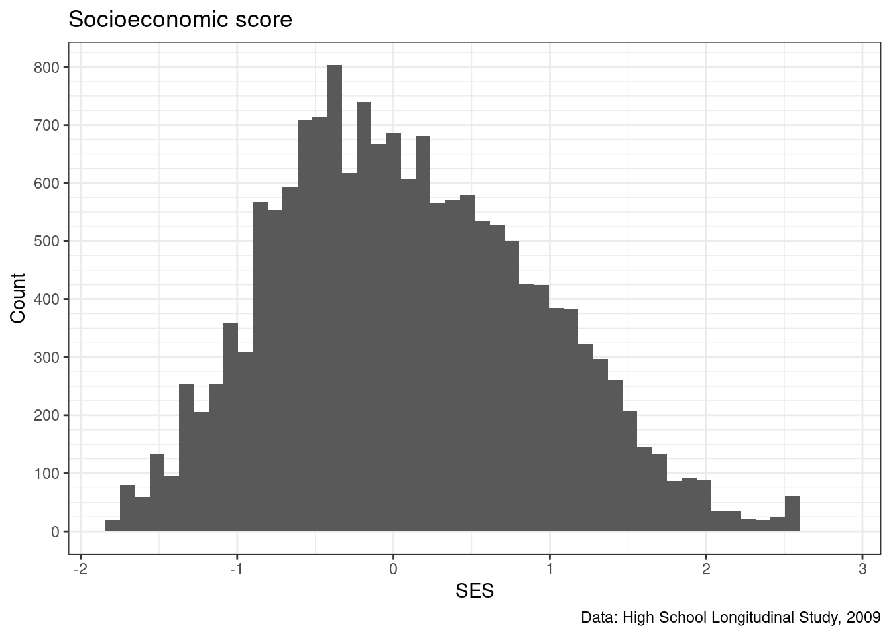
Now that we have this new plot, let’s paste it to the other figures in a 2 over 1 pattern. To make that clear to patchwork, we use parentheses just like we might in algebra (remember PEMDAS?) to set priority. The parentheses paste the first two figures side by side and then stack this new combined plot above the new plot.
## use parentheses to put figures together (like in algebra)pp <- (p + p2) / p3## showpp
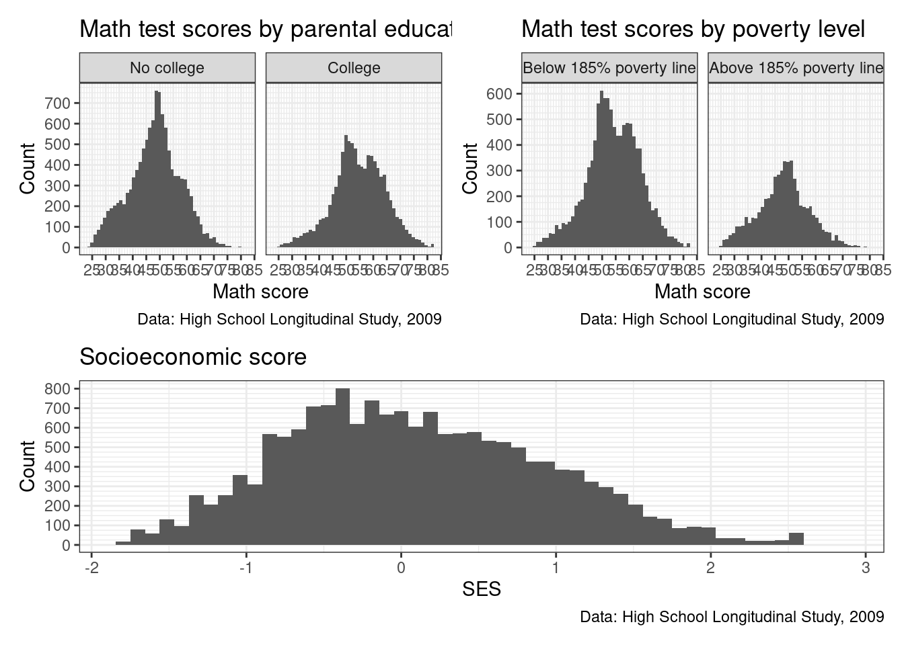
Because of the new structure, the side by side of the first two figures doesn’t look quite as squished as before. That said, labels and titles still overlap. We also have redundant information. Do we really need that data caption three times?
Let’s do some clean up to make a nice final figure. The easiest thing will be to remake the figures. This time we’ll:
remove the caption argument from labels (we’ll add it in later)
use theme_bw(base_size = 8) to change the overall size of the font. This should help with all the overlapping text.
## ---------------------------## patchwork: clean up## ---------------------------## Redo the above plots so that:## - remove some redundant captions## - change base_size so font is smaller## test score by parental educationp1 <-ggplot(data = df,mapping =aes(x = math_test)) +facet_wrap(~factor(pared_coll,levels =c(0,1),labels =c("No college","College"))) +geom_histogram(bins =50) +scale_x_continuous(breaks =seq(from =0, to =100, by =5),minor_breaks =seq(from =0, to =100, by =1)) +scale_y_continuous(breaks =seq(from =0, to =1500, by =100),minor_breaks =seq(from =0, to =1500, by =25)) +labs(title ="Math test scores by parental education",x ="Math score",y ="Count") +theme_bw(base_size =8)## test score by poverty levelp2 <-ggplot(data = df,mapping =aes(x = math_test)) +facet_wrap(~factor(pov185,levels =c(0,1),labels =c("Below 185% poverty line","Above 185% poverty line"))) +geom_histogram(bins =50) +scale_x_continuous(breaks =seq(from =0, to =100, by =5),minor_breaks =seq(from =0, to =100, by =1)) +scale_y_continuous(breaks =seq(from =0, to =1500, by =100),minor_breaks =seq(from =0, to =1500, by =25)) +labs(title ="Math test scores by poverty level",x ="Math score",y ="Count") +theme_bw(base_size =8)## create third histogram of just SESp3 <-ggplot(data = df,mapping =aes(x = x1ses, y = math_test)) +geom_point() +scale_x_continuous(breaks =seq(from =-5, to =5, by =1),minor_breaks =seq(from =-5, to =5, by =0.5)) +scale_y_continuous(breaks =seq(from =0, to =100, by =10),minor_breaks =seq(from =0, to =100, by =5)) +labs(title ="Math test scores by socioeconomic status",x ="SES",y ="Math score") +theme_bw(base_size =8)## use parentheses to put figures together (like in algebra)pp <- (p1 + p2) / p3
We’ve remade our figures and used patchwork to put them together. But as a final step, we’ll use patchwork’s plot_annotation() argument to add:
overall title
a single caption
plot-specific tags that are useful for referencing certain plots (i.e., you can say “plot / facet A” rather than “the top left plot / facet”)
We add plot_annotation() using a + sign just like with a normal ggplot chain.
## add annotationspp <- pp +plot_annotation(title ="Math scores across various factors",caption ="Data: High School Longitudinal Study, 2009",tag_levels ="A")## showpp
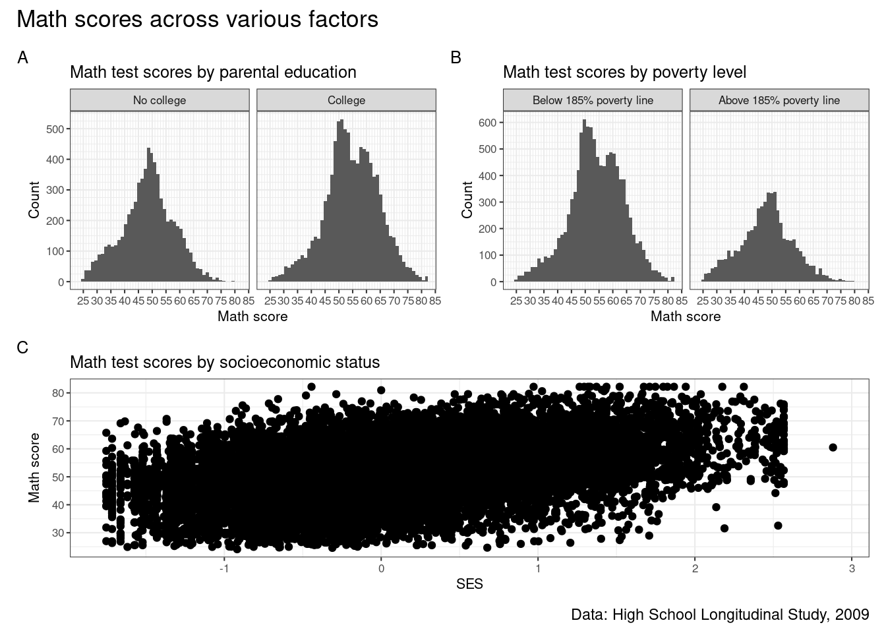
Done and looking pretty good! Well, the blob of in plot C maybe isn’t that useful…
We can always do more, of course, but remember that a figure doesn’t need to be complicated to be good. In fact, simpler is often better. The main thing is that it is clean and clear and tells the story you want the reader to hear. What exactly that looks like is up to you and your project!
ggplot2 Challenge!
This week, your assignment is to use the ggplot2-challenge-data.csv (download above) to recreate the below plot
To successfully complete the assignment, write ggplot2 code that creates a plot that closely resembles the below plot
For the full 5 points, the information portrayed needs to be identical with reasonably similar aesthetics
If you want to go the extra mile, there is a coveted ggplot2 magnet prize for the student who most closely copies the plot
You’re still welcome to work together, but, I only have 2 magnets… So any ties beyond that will have a slight delay in receiving their prize…
Hint: the data is already cleaned, but, there are still a couple of data wrangling tasks you’ll need to do before you can make the plot
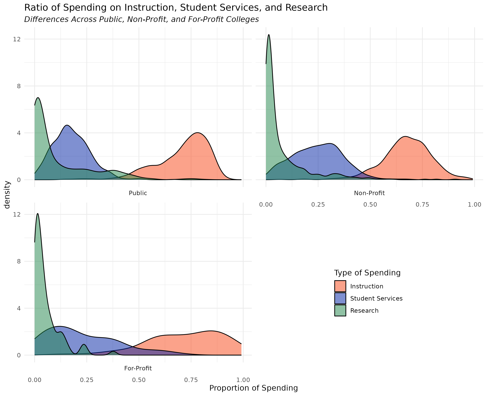
ggplot2 Challenge Plot
Once complete, turn in the .R script (no data etc.) to Canvas by the due date (Sunday 11:59pm following the lesson). Assignments will be graded on the following Monday (time permitting) in line with the grading policy outlined in the syllabus.